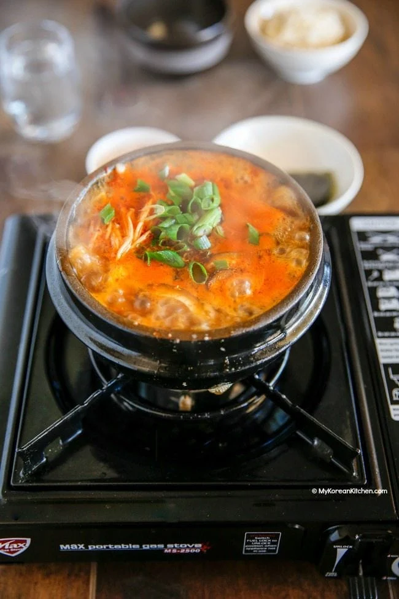

Back to Home
Sundubu Jjigae

Ingredients
- 1/2 package of soft tofu
- 1/4 cup of kimchi
- 1/4 cup of pork
- 1/4 cup of clams
- 1/4 cup of enoki mushrooms
- 1/4 cup of green onions
- 1/4 cup of onion
- 1/4 cup of zucchini
- 1/4 cup of water
- 1/2 tablespoon of minced garlic
- 1/2 tablespoon of soy sauce
- 1/2 tablespoon of red pepper powder
- 1/2 tablespoon of sesame oil
- 1/2 tablespoon of salt
- 1/2 tablespoon of sugar
- 1 egg
Instructions
- Prepare the ingredients: cut the tofu, kimchi, pork, clams, enoki mushrooms, green onions, onion, and zucchini into bite-sized pieces.
- Heat a pot on medium heat and add the minced garlic.
- Add the pork and stir-fry until it's no longer pink.
- Add the kimchi and stir-fry for 1 minute.
- Add the clams and stir-fry for 1 minute.
- Add the onion, zucchini, and enoki mushrooms and stir-fry for 1 minute.
- Add the water and bring it to a boil.
- Add the tofu, soy sauce, red pepper powder, salt, and sugar.
- Let it boil for 5 minutes.
- Crack an egg into the pot and let it cook for 1 minute.
- Add the green onions and sesame oil.
- Remove from heat and serve hot.